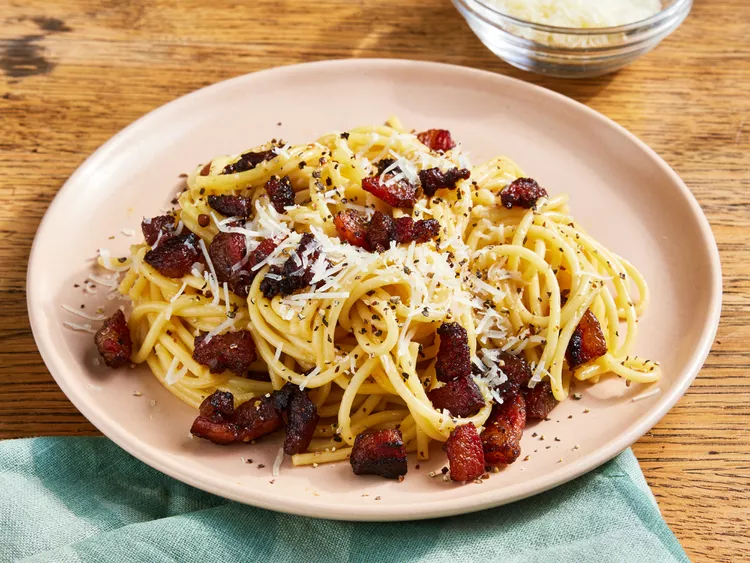

Spaghetti Carbonara

Ingredients
- 100g Diced Pancetta
- 100g Spaghetti
- 3 Egg Yolks
- 40g Parmesan
- Salt & Pepper to taste
Steps
- Add oil to a hot pan and begin frying the pancetta
- Add spaghetti to boiling, salted water (should take around 10 minutes)
- While your pancetta and spaghetti are cooking, add your egg yolks to a bowl and beat thouroughly
- Add your parmesan to beaten egg yolks and mix well
- When your pancetta is cripsy, remove pan from heat
- When spaghetti is al dente, add 2 tbsp of the water to the pancetta, and drain spaghetti
- Add salt and pepper to your egg mix, and add drained spaghetti and egg mix to your pancetta pan
- Mix everything together thouroughly. The residual heat from the pan should cook the eggs without scrambling them
- Plate your spaghetti, top with grated parmesan and black pepper, and enjoy!